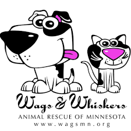

Volunteer - Dog Rescue & Foster Care
A community-focused role dedicated to animal welfare through foster care, adoption support, and rescue efforts.
My volunteer work in dog rescue and foster care is a community-focused role dedicated to promoting animal welfare and responsible adoption. This experience required a high level of compassion, commitment, and reliability while supporting animals during critical transition periods.
I completed over 100 volunteer hours, fostering dogs by providing safe, nurturing temporary homes and supporting their physical and emotional adjustment prior to adoption. In addition, I actively assisted with adoption events, fundraising initiatives, and rescue events, helping raise awareness for the organization and connect animals with permanent, loving homes. I also supported the rescue through animal transport efforts, ensuring dogs were safely transported to foster homes, veterinary appointments, and adoption locations.
Through this experience, I strengthened key skills including responsibility, teamwork, time management, communication, and community engagement. This role reinforced my dedication to service and demonstrated my ability to manage long-term commitments while making a meaningful and positive impact within my community.